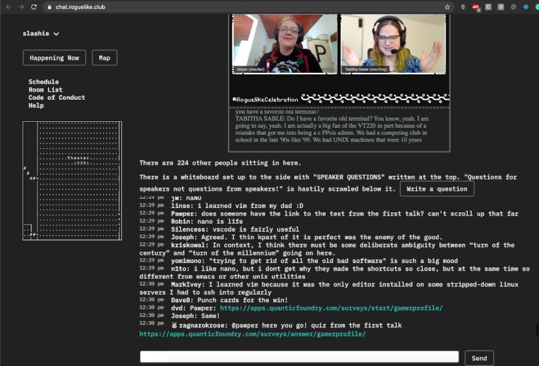
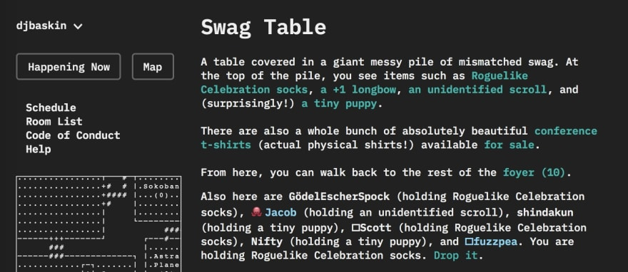

Roguelike Celebration and Azure-MUD
{kind=link}
Roguelike Celebration is community-generated weekend of talks, games, and conversations about roguelikes and related topics, including procedural generation and game design. It's for fans, players, developers, scholars, and everyone else!
The first Roguelike Celebration was in 2016. I helped suggest speakers to invite, and formally joined the core organizing committee in 2017. Among many other tasks, I run our talk selection and curation process.
In 2020, Roguelike Celebration moved online. I pushed for us to create our own custom event platform / virtual social space, creating a text-based virtual world that used design techniques found in MUDs and MMOs to try to encourage spontaneous social interactions, small group conversations, and friendship formation over the course of our annual 2-day conference.
{kind=link}
We continue to maintain, support, and improve on our open-source platform. I lead design and development of the project, managing a team of 6-8 volunteers. We currently target two events a year (a 2-hour preview meetup and a 2-day conference), with about 700 attendees a year for the full conference.
We additionally reach around 10,000 total livestream views during our event weekend, and our YouTube channel talk archives receive about 20,000 views per month.
A few links about the design and technical implementation of our space: